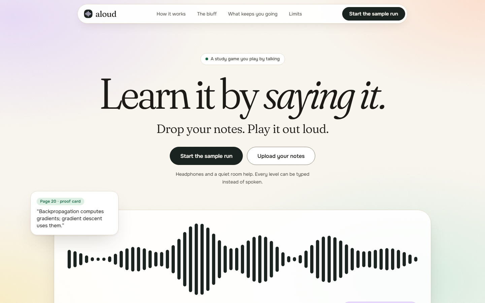
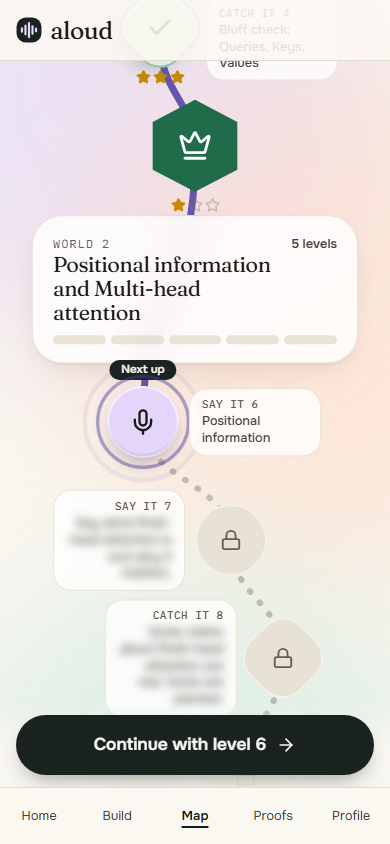

Learn it by saying it.
Drop your notes. Play them out loud. In some levels the examiner lies to you, and you catch it with the page as proof.
Who it is for
A student revising from their own text notes before an oral exam, a viva or a seminar, who has read the pages several times and never tried to explain them aloud.
Who it is not for
Scanned notes with no text layer, or anyone who wants their notes fact-checked. Aloud checks what you say against your notes, not the notes against the world.
Rereading and highlighting test recognition. Saying it with the page closed tests recall.
Alone, nobody asks the follow-up, and nothing pushes back when you nod along to a plausible sentence.
So Aloud pushes back. It states claims from your notes, half of them quietly altered, and the round is only won if you catch them.

Explain a concept. The examiner follows up. Code grades you against your pages.
The examiner states a claim. Half are real, half altered. Call real or bluff.
A mixed round that ends each world, with 4 hearts.
Concepts you missed come back later as a level.
3 hearts a level. XP with a combo multiplier. Up to 3 stars. Ranks 1 to 30. A daily streak with freezes earned every 7 days. Rules are pure functions in src/lib/game, unit-tested.

The examiner says
Each token is not projected into three vectors: a query, a key, and a value.
Bluff: a negation was added
Your page, p. 7
Each token is projected into three vectors: a query (what this token is looking for), a key, and a value.
The stored flag on the claim and your call. The page check supplies the proof card. No code reads the examiner's prose, so a model that misspeaks cannot change your score.
On the sample run the page check proved 7 of 11 bluffs. It missed 3 and called 1 supported. Real claims: 8 of 8 proved. A miss costs the proof line, not points.
| Piece | What Aloud does |
|---|---|
| Voice Agent API | Browser WebSocket, 24 kHz PCM16 microphone audio up, examiner audio down. |
| Token flow | A server route mints a token of at most 600 s per connection. The key is in no client file; a test scans for it. |
| Session config | session.update with the versioned prompt, three tools, key terms from your concepts, and a block for the level being played. |
| Native turn detection | Only documented fields: vad_threshold, interrupt_response, interruption_delay. Undocumented names sent earlier were ignored by the service; probing found it. |
| Tool calling | search_my_material, verify_claim, grade_my_answer, held until reply.done, answered with tool.result. |
| Barge-in | On input.speech.started playback is flushed and late audio is dropped. |
Session ready. Median, n=3, 2026-09-29.
First examiner audio. Median, n=3, 2026-09-29.
Learner's first loud sample to the service reporting speech. n=3. Not a measured playback stop.
Labelled claims through verify_claim. 0 false supported. Judge median 590 ms.
Sample-run bluffs proven with a quote and page. 8 of 8 real claims proven. 2026-09-30.
Sample run, built deterministically. All 26 subjects give 12 to 30.
Passed, 1 skipped, 100 files. 2026-09-30.
0 axe violations at 390 px (wcag2a, wcag2aa, wcag21aa). Typed rounds, local.
Voice rows: synthetic learner voice (Windows System.Speech), a Node client running the browser's socket code, a local server. No browser and no human microphone. Numbers are in numbers.json.
Links
github.com/vaibhav4046/aloud
Live URL and video: on the submission form
Built on
AssemblyAI Voice Agent API, Next.js, TypeScript
Made by
Vaibhav Lalwani, one person, September 2026